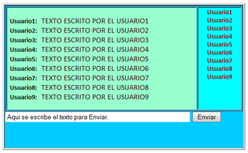

Práctica: Chat con Frames
Mejore la vista del chat utilizando streaming y server sent events descrito en la sección
2.9.3 para que:
- Usando frames, framesets
iframes, tablas u otros mecanismos, haga que en un marco salgan los nicks de los usuarios conectados,
en otro la conversación y en un tercero el texto que se va a enviar.
Figura:
Típica disposición de un chat
|

|
Casiano Rodríguez León
2013-04-24